表示空間と座標変換 (第 5 回)
| 氏名 | 入佐 啓士
|
|---|
| クラス | 理科 1 類 37 組
|
|---|
| 学生証番号 | J4-220897
|
|---|
□課題5.0 - 5.2節 例 1: 2次元ベクトルの定義 vectorMatrix.py
○プログラムリスト
(例題なので省略)
○実行コマンド
$ python vectorMatrix.py
○実行結果
| [3 4] | = 5.0
[ 1 -1] + [3 4] = [4 3]
[3 4] - [ 1 -1] = [2 5]
[3 4] * 2 = [6 8]
[ 1 -1] * [3 4] = [ 3 -4]
[ 1 -1] . [3 4] = -1
rotate ( [3 4] ) = [-4. 3.]
scale&rot( [3 4] ) = [-8. 6.]
inv&rot ( [3 4] ) = [3. 4.]

○考察
今回は、numpyを用いて2次元ベクトルに回転、拡大縮小などの処理を行うプログラムを走らせた。
一つ目はnorm関数を定義した。dotという内積メソッドを使い自分自身との内積を取ることで、ベクトルの長さの2乗をとり平方根を出力してベクトルの大きさを返すプログラムである。
二つ目はrotMatrix関数をを定義した。((cos, -sin), (sin, cos))という回転行列をnumpy.arrayクラスとして出力する関数である。
三つ目はscaleMatrix関数を定義した。単位行列をs倍した拡大行列をnumpy.arrayクラスとして出力する関数である。
実行結果を見ると、正しく計算結果が反映されていることがわかる。dotメソッドの出力結果はfloat型なので[-8. 6.]というふうに出力されている。
□課題5.0 - 5.3節 例 1: 円の描画 myCircle.py
○プログラムリスト
(例題なので省略)
○実行コマンド
$ python myCircle.py 128
○実行結果
(文字列の表示なし)
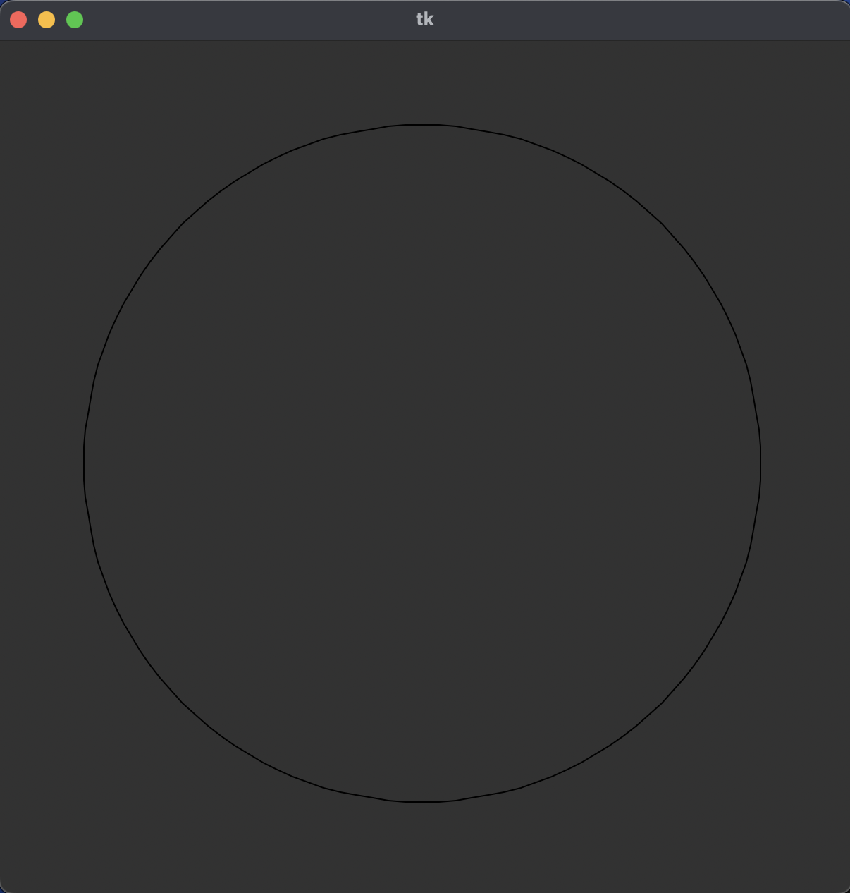
○考察
今回は、ワールド座標系上で演習上の点の位置を指定して、myCanvasモジュールのdrawPolygonメソッドでスクリーン座標系に変換して円を描くプログラムを走らせた。
circle関数は引数としてcen=(0,0), r=0.8を持ち、ワールド座標系で円周上を指定された個数に分割したpointsを出力する。myCanvasのdrawPolygonを使うのはワールド座標系で指定したpointsだと描画する時にユーザーが望む出力結果にならないので、スクリーン座標系に変換する必要があるからだ。この操作はC言語のコンパイルに似ていると思った。
出力結果としては写真の通りで、以前の授業での実行結果と同じものが得られた。考察として、ワールド座標系で指定したユーザーの希望通りに円が描画されていることを実感するため中心や半径を変更して次のセクションで実行しようと思う。
□課題5.0 - 5.3節 例 1-2: 円の描画2 myCircle2.py
○プログラムリスト
1 import numpy as np
2 import sys
3 import math
4 from myCanvas import MyCanvas
5
6
7 def circle(cen=(0, -0.5), r=0.5):
8 if len(sys.argv) > 1:
9 num = sys.argv[1]
10 else:
11 num = input('# of points -> ')
12 n = int(num)
13 p = []
14 for i in range(n):
15 t = 2 * math.pi * i / n
16 p.append(np.array((r * math.cos(t) + cen[0], r * math.sin(t) + cen[1])))
17 return tuple(p)
18
19
20 def display(canvas, points):
21 canvas.drawPolygon(points, fill='')
22
23
24 # 格子点を描く関数
25 def draw_grid(canvas, interval):
26 x_range, y_range = 2.0, 2.0
27
28 num_x_lines = int(x_range / interval) + 1
29 num_y_lines = int(y_range / interval) + 1
30
31 # 垂直の格子線
32 for i in range(-num_x_lines, num_x_lines + 1):
33 x = i * interval
34 canvas.drawPolyline(((x, -y_range), (x, y_range)))
35
36 # 水平の格子線
37 for i in range(-num_y_lines, num_y_lines + 1):
38 y = i * interval
39 canvas.drawPolyline(((-x_range, y), (x_range, y)))
40
41
42 def main():
43 canvas = MyCanvas()
44 draw_grid(canvas, 0.5)
45 points = circle()
46 display(canvas, points)
47 canvas.mainloop()
48
49
50 if __name__ == '__main__':
51 main()
○実行コマンド
$ python myCircle2.py 128
○実行結果
(文字列の表示なし)
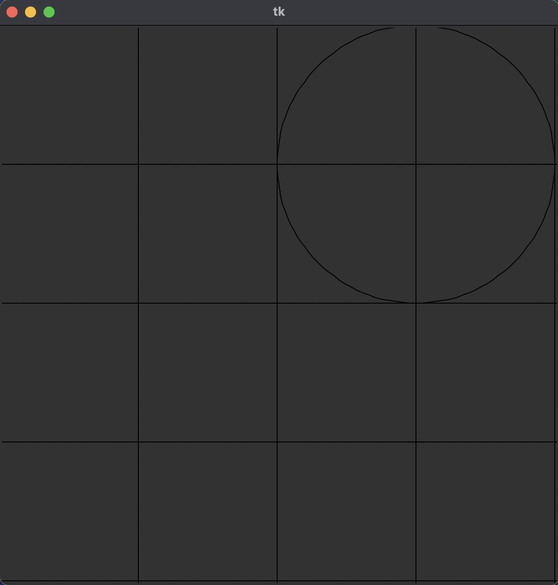
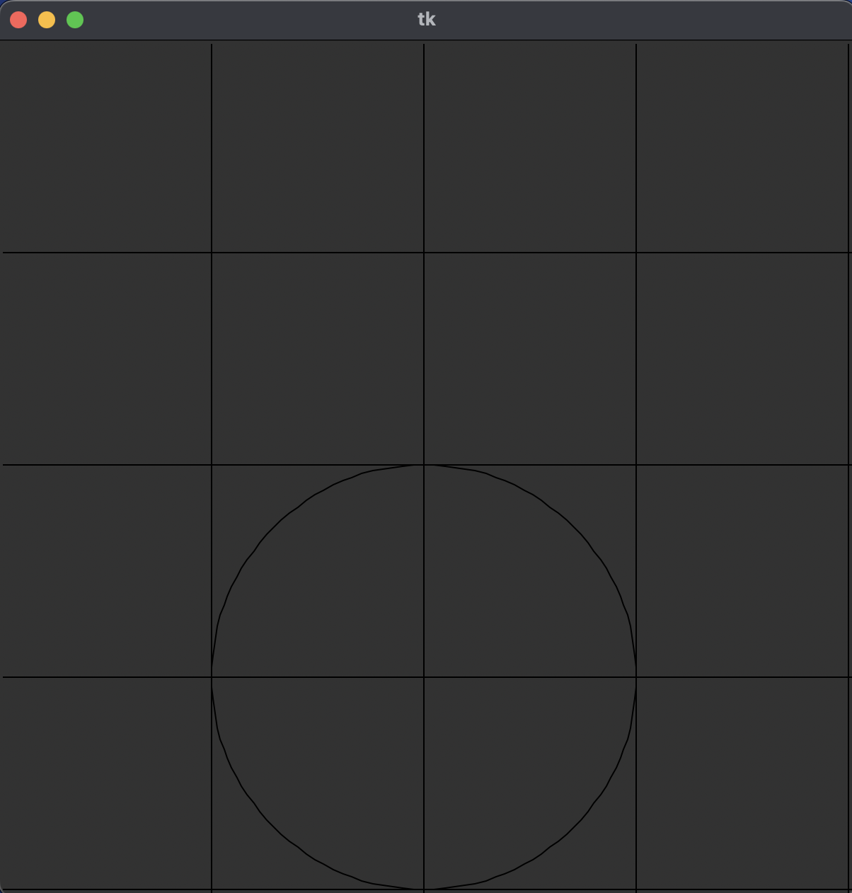
○考察
今回はワールド座標系で円の中心と半径を指定してユーザーが直感的に円の位置を操作して円を描画できるプログラムを実行した。
今回はワールド座標系で間隔0.5の格子点を指定して、myCanvasモジュールのdrawPolylineメソッドでスクリーン座標系に変換して格子点をキャンバス上に描くことで、ユーザーが円の位置と半径を指定しやすく改良した。
一つ目の実行結果は円の中心(0.5, 0.5)、半径0.5の円を描画するプログラムで、期待通り(0.5, 0.5)の格子点を中心として円が描かれていることが一目でわかった。二つ目は円の中心(0, -0.5)、半径0.5の円を描いた。同様に直感的に円の場所が理解できた。
今回の実行結果を通してワールド座標系とスクリーン座標系を翻訳することで、より図形の操作が直感的でわかりやすくなることが実感できた。
□課題5.0 - 5.3節 例 2: 円によるカージオイドの描画 myCardioidCircle.py
○プログラムリスト
(例題なので省略)
○実行コマンド
$ python myCardioidCircle.py 64
○実行結果
(文字列の表示なし)
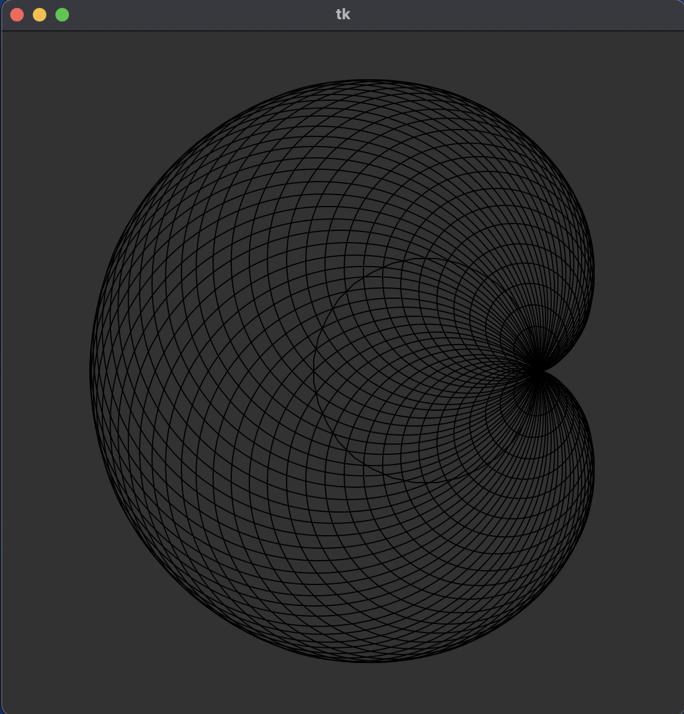
○考察
今回はワールド座標系で指定した位置を元にスクリーン座標系に変換して円によるカージオイドを描画するプログラムを走らせた。
myCircleモジュールでワールド座標中心(0.25, 0)、半径0.33の円周上の点集合を元にdisplay関数で円によるカージオイドを描いている。
実行結果は画像の通りで、norm(points[i] - points[0])により一点からの距離を半径に持ち定円に対してカージオイドが描かれている。ワールド座標系でのカージオイドの処理に対する理解を深めるため、考察として次のセクションで線分によるカージオイドを描くプログラムを走らせようと思う。
□課題5.0 - 5.3節 例 2-2: 直線によるカージオイドの描画 myCardioidLine.py
○プログラムリスト
1 from myCanvas import MyCanvas
2 import myCircle
3
4
5 def display(canvas, points):
6 for i in range(len(points)):
7 j = (2*i) % len(points)
8 canvas.drawPolyline((points[i], points[j]))
9
10
11 def main():
12 canvas = MyCanvas()
13 points = myCircle.circle((0.25, 0), 0.33)
14 myCircle.display(canvas, points)
15 display(canvas, points)
16 canvas.mainloop()
17
18
19 if __name__ == "__main__":
20 main()
○実行コマンド
$ python myCardioidLine.py 64
○実行結果
(文字列の表示なし)
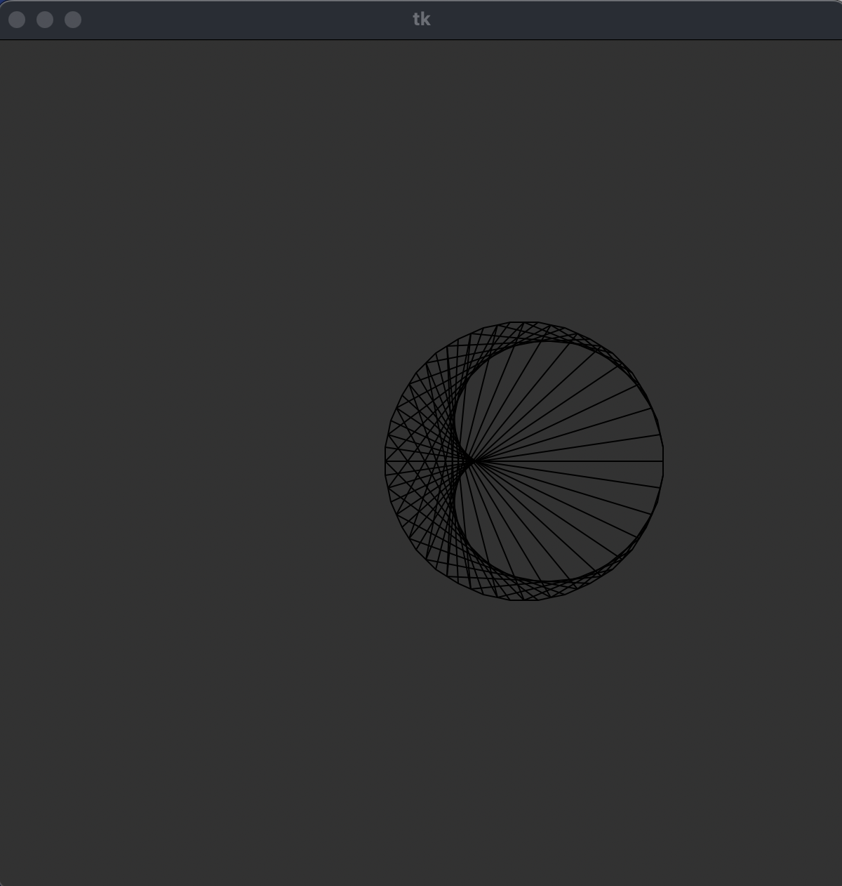
○考察
今回は、ワールド座標系で円周上のj = (2*i) % len(points)を満たす2点を結ぶ線分を描くことで直線によるカージオイドを描画するプログラムを走らせた。
display関数でj = (2*i) % len(points)を満たす2点を指定し、myCanvasモジュールのdrawPolylineに受けわたすことでスクリーン座標系に変換して描画するというもので、drawPolilineメソッドに引き渡すときにpointsをタプルで渡すことに注意しなければならなかった。
実行結果は画像の通りで、13行目で指定するワールド座標系中心(0.25, 0)、半径0.33の基円を元に直線によるカージオイドが描かれた。
□課題5.0 - 5.3節 例 3: マウスによる線分の描画 myRubberband.py
○プログラムリスト
(例題なので省略)
○実行コマンド
$ python myRubberband.py
○実行結果
(文字列の表示なし)
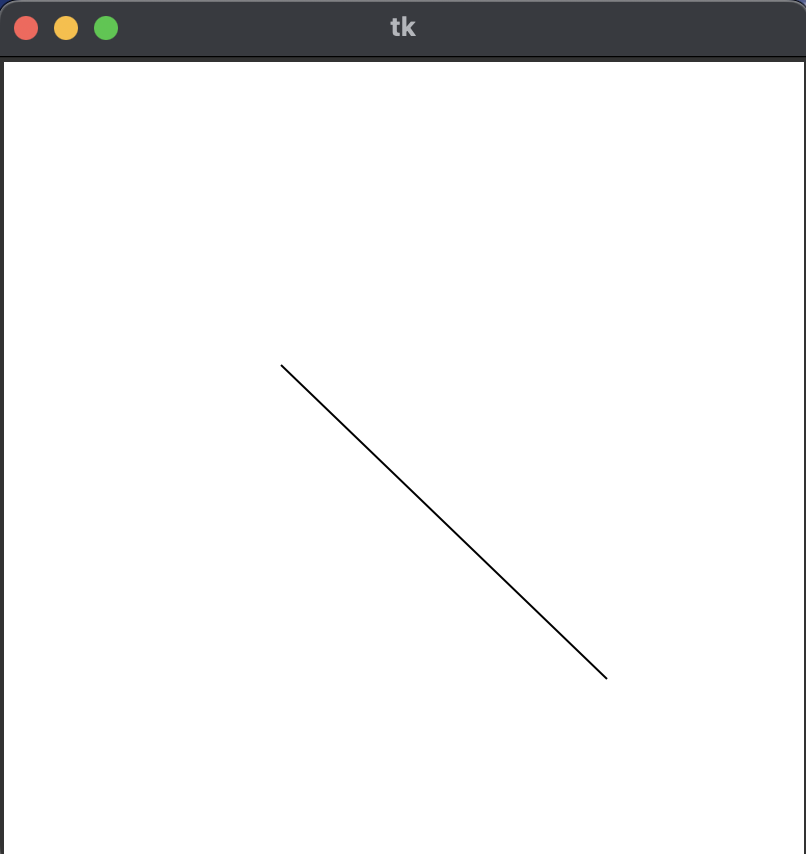
○考察
今回は、グローバル座標系でのマウスの位置をmyCanvasモジュールのpointメソッドでスクリーン座標系に変換して、マウスの位置を追跡する線分を描くプログラムを走らせた。
マウスが移動するたびにカーソルの位置を取得し、myCanvasモジュールのclearメソッドでイベントのたびにcanvasを白く再描画することでゴム紐のような線分を描画することができる。
実行結果は画像の通りである。グローバル座標系でのイベントの処理の実装について理解を深めるために前回の授業の多機能お絵描きアプリをmyCanvasモジュールを使って次のセクションで実装しようと思う。
□課題5.0 - 5.3節 例 3-2: 多機能お絵描きアプリ mydraw.py
○プログラムリスト
1 from tkinter import *
2 from myCanvas import MyCanvas
3
4
5 def pressed_black(event):
6 global canvas, old
7 old = canvas.point(event.x, event.y)
8
9
10 def dragged_black(event):
11 global canvas, old
12 canvas.drawPolyline((old, canvas.point(event.x, event.y)), color="black")
13 old = canvas.point(event.x, event.y)
14
15
16 def pressed_red(event):
17 global canvas, old
18 old = canvas.point(event.x, event.y)
19
20
21 def dragged_red(event):
22 global canvas, old
23 canvas.drawPolyline((old, canvas.point(event.x, event.y)), color="red")
24 old = canvas.point(event.x, event.y)
25
26
27 def pressed_erase(event):
28 global canvas, old
29 old = canvas.point(event.x, event.y)
30
31
32 def dragged_erase(event):
33 global canvas, old
34 canvas.drawMarker(old, fill="white")
35 old = canvas.point(event.x, event.y)
36
37
38 def main():
39 global canvas
40 canvas = MyCanvas(width=400, height=400)
41 canvas.bind("", pressed_black)
42 canvas.bind("", dragged_black)
43 canvas.bind("", pressed_red)
44 canvas.bind("", dragged_red)
45 canvas.bind("", pressed_erase)
46 canvas.bind("", dragged_erase)
47 canvas.mainloop()
48
49
50 if __name__ == "__main__":
51 main()
○実行コマンド
$ python mydraw.py
○実行結果
(文字列の表示なし)
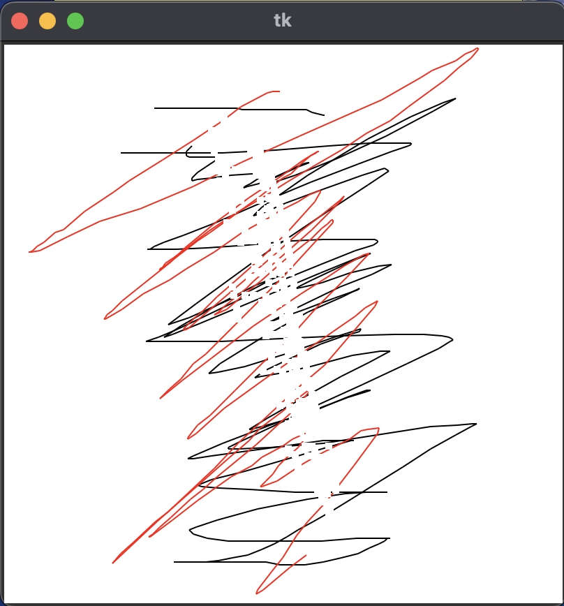
○考察
今回は、グローバル座標系で黒色、赤色、消しゴム機能が追加お絵描きプログラムを実装して、走らせた。
前回のプログラムから変更した点は、ワールド座標系のイベント発生位置をmyCanvasモジュールのpointメソッドによってスクリーン座標系に変換した点と、線分、マーカーの描画をdrawPolyline、drawMarkerメソッドで行う部分である。実装をしてみて、myCanvasに既にメソッドが定義されていることからコードの量が短くなって描きやすかった。
実行結果は画像の通りで、黒、赤、消しゴムが期待通りに描画されている。
□課題5.0 - 章末課題 1-1: ダイアモンドパターンの描画 myDiamond.py
○プログラムリスト
1 from myCanvas import MyCanvas
2 from vectorMatrix import norm
3 import myCircle
4
5
6 def display(canvas, points):
7 n = len(points)
8
9 # 全ての対角線を描く
10 for i in range(n):
11 for j in range(i+1, n):
12 canvas.drawPolyline((points[i], points[j]))
13
14
15 def main():
16 canvas = MyCanvas()
17 points = myCircle.circle((0, 0), 0.8)
18 display(canvas, points)
19 canvas.mainloop()
20
21
22 if __name__ == '__main__':
23 main()
○実行コマンド
$ python myDiamond.py 32
○実行結果
(文字列の表示なし)
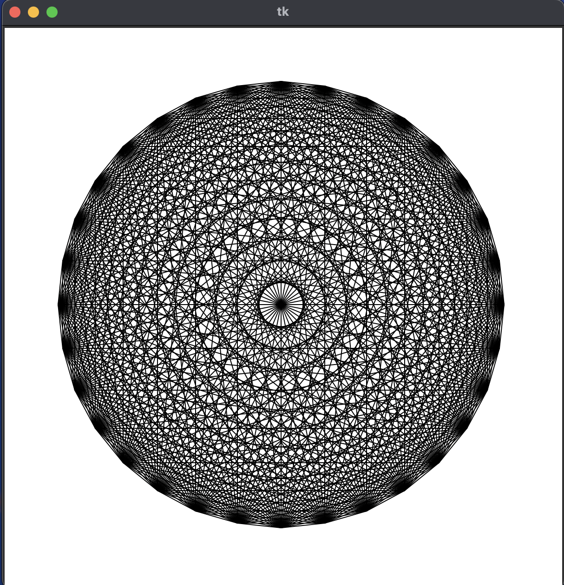
○考察
今回はワールド座標系でmyCircleモジュールを用いてダイアモンドパターンを描画するプログラムを走らせた。
第二章のプログラムとの変更点は、選択された2点を結ぶ対角線を描く際に、drawPolylineメソッドを使うので、pointsをタプルで送ることと、pointsをmyCircleモジュールのcircleメソッドで得ることである。
実行結果は画像の通りで、ワールド座標系中心(0,0)、半径0.8の円を基円としてダイアモンドパターンが期待通り得られた。
□課題5.0 - 章末課題 1-2: 直線によるネフロイドの描画 myNephroidLine.py
○プログラムリスト
1 from myCanvas import MyCanvas
2 from vectorMatrix import norm
3 import myCircle
4
5
6 def display(canvas, points):
7 for i in range(len(points)):
8 j = (3*i) % len(points)
9 canvas.drawPolyline((points[i], points[j]))
10
11
12 def main():
13 canvas = MyCanvas()
14 points = myCircle.circle((0, 0), 0.8)
15 myCircle.display(canvas, points)
16 display(canvas, points)
17 canvas.mainloop()
18
19
20 if __name__ == '__main__':
21 main()
○実行コマンド
$ python myNephroidLine.py 128
○実行結果
(文字列の表示なし)
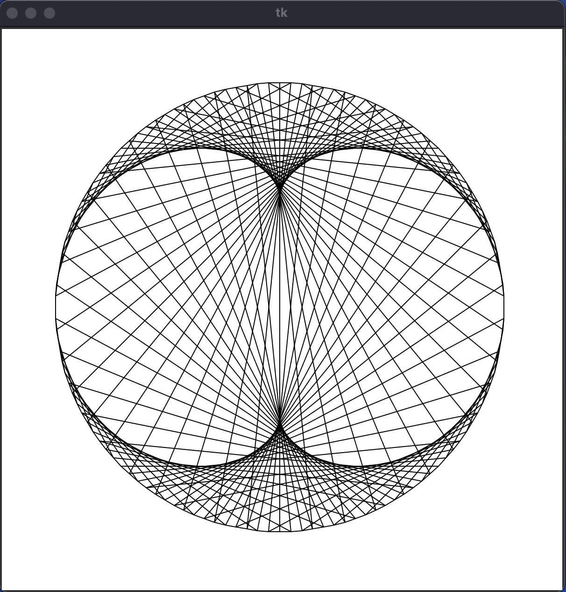
○考察
今回は、ワールド座標系で直線によるネフロイドを描画するプログラムを走らせた。
第2回との変更点は、pointsをmyCircleモジュールcircleメソッドを使って得ることと、myCanvasモジュールdrawPolylineメソッドを利用して2点を結ぶ線分を描くことである。
実行結果は画像の通りで、circleメソッドの引数で指定したグローバル座標系中心(0, 0)、半径0.8の円を基円とした直線によるネフロイドが描画された。
□課題5.0 - 章末課題 1-3: 円によるネフロイドの描画 myNephroidOval.py
○プログラムリスト
1 from myCanvas import MyCanvas
2 from vectorMatrix import norm
3 import numpy as np
4 import myCircle
5
6
7 def display(canvas, points):
8 for i in range(1, len(points)):
9 vector = np.array(points[i]) - np.array(points[0])
10 y_component_vector = np.array((0, vector[1]))
11 r = norm(y_component_vector)
12 myCircle.display(canvas, myCircle.circle((points[i]), r))
13
14
15 def main():
16 canvas = MyCanvas()
17 points = myCircle.circle((0, 0), 0.4)
18 myCircle.display(canvas, points)
19 display(canvas, points)
20 canvas.mainloop()
21
22
23 if __name__ == '__main__':
24 main()
○実行コマンド
$ python myNephroidOval.py 64
○実行結果
(文字列の表示なし)
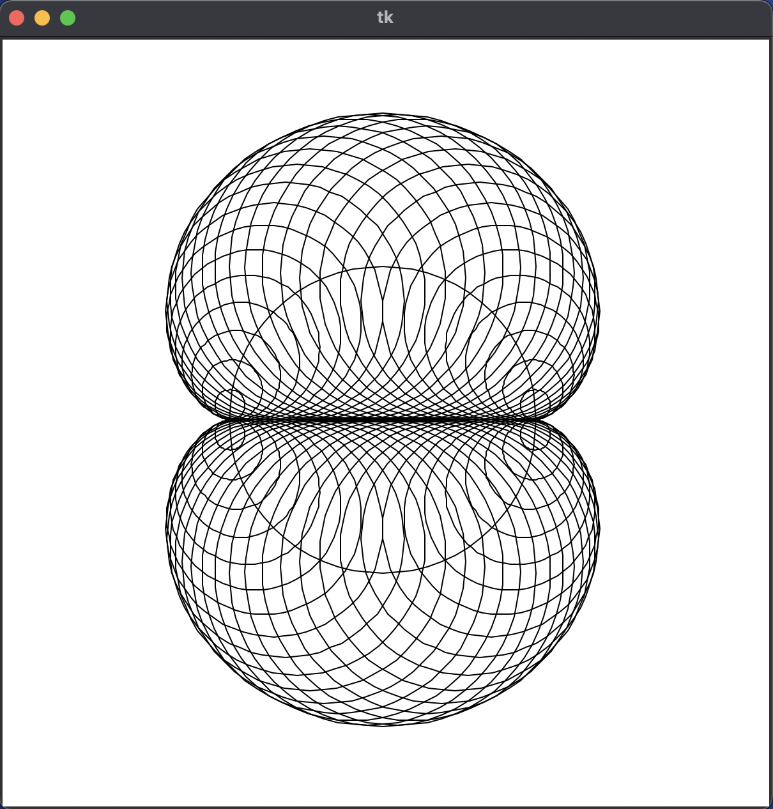
○考察
今回はグローバル座標系で円によるネフロイドを描画するプログラムを走らせた。
まず対象のpointとpoints[0]とのベクトルを求め、そのベクトルのy成分を求め、最後にy成分ベクトルのnormを得ることで円の半径が得られる。そして、myCircleモジュールのdisplayメソッドに中心となるpointと求めたrを受けわたせば、各点を中心とした円が描ける。
今回の実験を通して、第2章と異なっていたのは、第2章では点のx成分y成分を使って長さを求めていたのに対し、今回はベクトルを使用したところである。ベクトルを使うことで計算ミスが起こりやすいような処理をせずに安全に図形が描けることが経験できた。
□課題5.0 - 章末課題 2-1: マウスによる円の描画 myRubberOval.py
○プログラムリスト
1 from myCanvas import MyCanvas
2 from vectorMatrix import norm
3 import numpy as np
4 import myCircle
5
6
7 def pressed(event):
8 global start
9 start = canvas.point(event.x, event.y)
10
11
12 def dragged(event):
13 global canvas, start
14 canvas.clear()
15 cursor = canvas.point(event.x, event.y)
16 r = norm(start - cursor)
17 myCircle.display(canvas, myCircle.circle(start, r))
18
19
20 def main():
21 global canvas
22 canvas = MyCanvas()
23 canvas.bind("", pressed)
24 canvas.bind("", dragged)
25 canvas.mainloop()
26
27
28 if __name__ == "__main__":
29 main()
○実行コマンド
$ python myRubberOval.py 64
○実行結果
(文字列の表示なし)
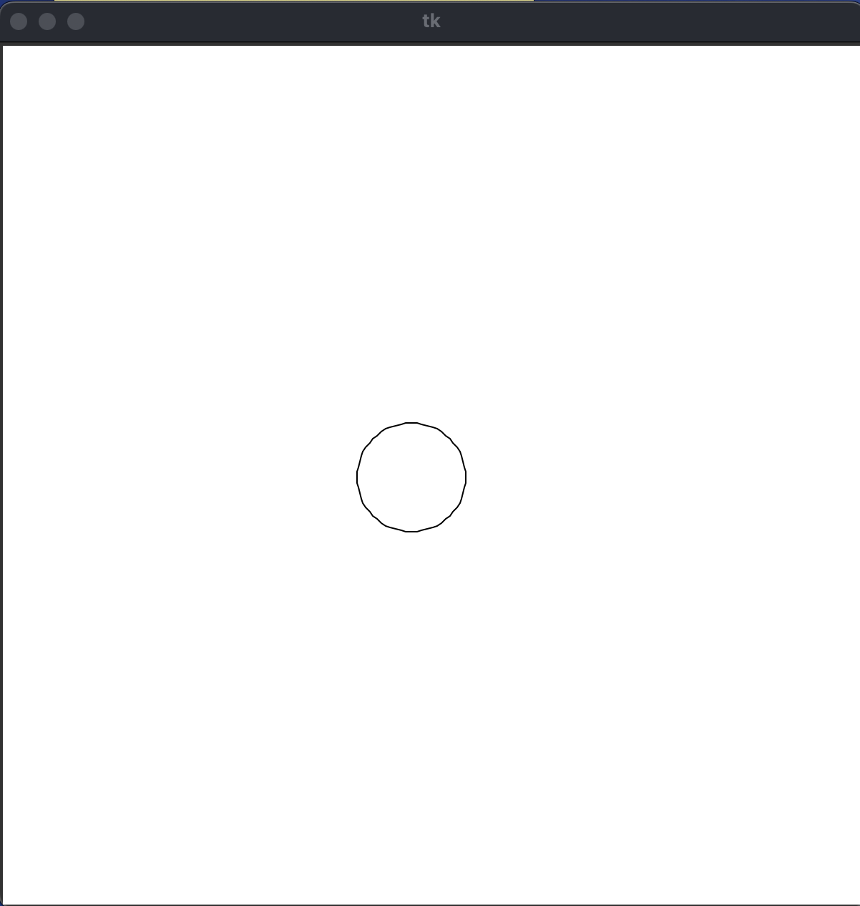
○考察
今回は、グローバル座標系でマウスに沿って円を描くプログラムを走らせた。
第4章との違いは、描く円の半径をstartからcursorを引いたベクトルのnormによって得た部分である。
実行結果は画像の通りで、マウスに沿って半径を変える円が描けた。前回のプログラムでx,y成分で計算していた部分もベクトルで扱うことで簡単にわかりやすく表現できることがわかった。
□課題5.0 - 章末課題 2-2: 半径が1/2倍、3/2倍の3つの円の描画 myRubber3Oval.py
○プログラムリスト
1 from myCanvas import MyCanvas
2 from vectorMatrix import norm
3 import numpy as np
4 import myCircle
5
6
7 def pressed(event):
8 global start
9 start = canvas.point(event.x, event.y)
10
11
12 def dragged(event):
13 global canvas, start
14 canvas.clear()
15 cursor = canvas.point(event.x, event.y)
16 original_r = norm(start - cursor)
17 one_second_r = 0.5*original_r
18 three_second_r = 1.5*original_r
19 myCircle.display(canvas, myCircle.circle(start, original_r))
20 myCircle.display(canvas, myCircle.circle(start, one_second_r))
21 myCircle.display(canvas, myCircle.circle(start, three_second_r))
22
23
24 def main():
25 global canvas
26 canvas = MyCanvas()
27 canvas.bind("", pressed)
28 canvas.bind("", dragged)
29 canvas.mainloop()
30
31
32 if __name__ == "__main__":
33 main()
○実行コマンド
$ python myRubber3Oval.py 64
○実行結果
(文字列の表示なし)
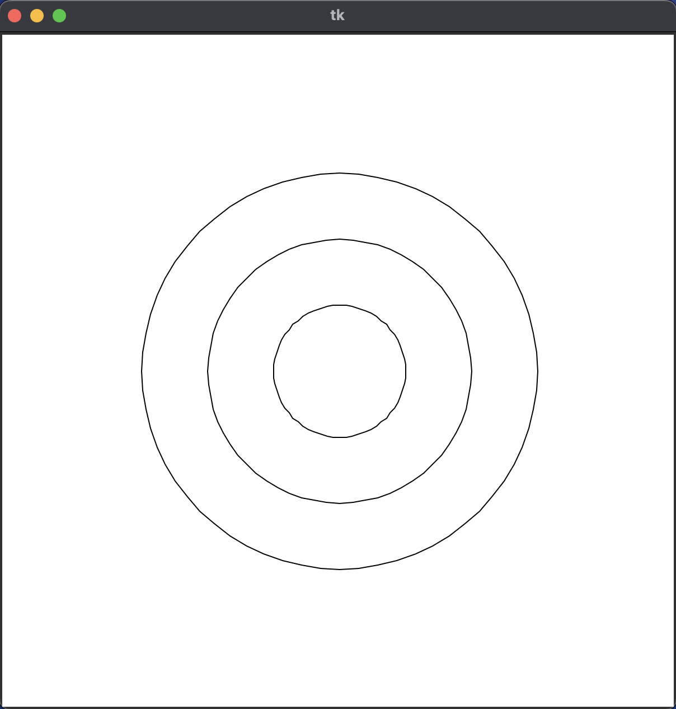
○考察
今回は、グローバル座標系でマウスに沿ってクリックした点とカーソルの距離が半径の円、その半径を1/2倍した円、3/2倍した円の計3つの円を同時に描画するプログラムを走らせた。
original_rをクリックした位置とカーソル位置のベクトルの差のベクトルのnormをとることで得て、それを中心に残り3つの円の半径を得て、それぞれmyCIrcleモジュールのdisplayメソッドにより描画した。
実行結果は画像の通り、3つの円がマウスに沿って大きさを変えながら描画されるのが体験できた。今回の実行を通して、vectorMatrixモジュールを使わなかったら、それぞれx,y成分に対して半径を計算しなくてはいけなく大変面倒だったが、ベクトルを使えば簡単に距離が求められることが実感できた。
□課題や授業に関して
○レポート作成に要した時間
4時間
○特に苦労した点
グローバル座標系について理解を深めるために、今までの課題で作成したプログラムの大半をグローバル座標系で実装しなおすのが大変でした。
○授業についての感想や希望
第4回と第5回で図形描画というよりはイベント処理、グローバル座標系などの基本技法を学んだので、それらを使って新しい図形を次の授業以降に描けるのが楽しみです。